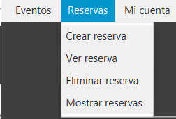

GUIA D'ÚS GESTORFEST
Benvingut/da a la guia d'ús de GestorFest. En aquesta guia s'explicarà el funcionament de l'aplicació per a que
qualsevol persona pugui utilitzar-la.
GestorFest és una aplicació dissenyada per gestionar esdeveniments i
reserves de manera eficient i fàcil. Amb aquesta guia, podràs aprendre com utilitzar totes les funcionalitats
principals de GestorFest per a organitzar i participar en esdeveniments emocionants.
A continuació, es
presentaran les funcionalitats principals de GestorFest, juntament amb instruccions pas a pas per a
utilitzar-les:
En el meu cas tinc dos tipus d'usuari que poden accedir a l'aplicació, organitzador i usuari.
-
ORGANITZADOR
-
Inici
Comencem per la pàgina d'inici de sessió. Iniciem sessió com a organitzador.
Ara tenim dues opcions, iniciar sessió amb un organitzador existent o registrar un organitzador nou, fent clic en el text inferior.
-
Pàgina principal
Una vegada hem iniciat sessió, ens apareix una pàgina amb un menú de navegació i ens mostra en pantalla les nostres dades d'organitzador.

Si fem clic en "Eventos" dintre del menú de navegació, ens mostrarà varies opcions: Crear, editar, eliminar i mostrar events
IMPORTANT! Els apartats "Editar evento" i "Mostrar eventos" només ens mostraran els events que hem fet amb aquell organitzador.
-
Crear event
Per a crear un event, hem d'omplir els camps que ens surten en pantalla i fer clic en el botó de "Crear".
-
Editar event
Per a editar un event, hem d'introduïr un ID vàlid i fer clic en la imatge de la lupa. Una vegada fet clic, si s'ha trobat l'event i coincideix amb l'organitzador, es mostraran en els seus camps corresponents, podent modificar tot excepte l'ID de l'event. Per a confirmar els canvis, fer clic en el botó "Editar".
-
Eliminar event
Per a eliminar un event, hem d'introduïr un ID vàlid i fer clic en "Eliminar". Una vegada fet clic, hauràs de confirmar el cuadre d'avís que apareixerà per a eliminar-ho definitivament.
-
Mostrar events
Per a mostrar els events de l'organitzador, hem de fer clic en el botó de "Listar".
Tornem enrere i fem clic en l'últim apartat del menú de navegació: "Mi cuenta". Ens mostrarà dues opcions: Modificar dades i tancar sessió.
-
Modificar dades
Si fem clic en "Modificar datos", ens portarà a la pàgina principal, on podrem modificar les nostres dades d'organitzador excepte el NIF.
-
Tancar sessió
Si fem clic en "Cerrar sesión", ens mostarà un cuadre de confirmació. Si acceptem, ens portarà a la pàgina d'inici de sessió d'organitzador.

-
-
-
USUARI
-
Inici
Comencem per la pàgina d'inici de sessió. Iniciem sessió com a usuari.
Ara tenim dues opcions, iniciar sessió amb un usuari existent o registrar un usuari nou, fent clic en el text inferior.
-
Pàgina principal
Una vegada hem iniciat sessió, ens apareix una pàgina amb un menú de navegació i ens mostra en pantalla les nostres dades d'usuari.
Si fem clic en "Eventos" dintre del menú de navegació, ens mostrarà l'opció de mostrar events.
A dintre, podrem mostrar tots els events disponibles o filtrar per la seva ubicació.
Tornem enrere i fem clic en "Reservas" dintre del menú de navegació, on ens mostrarà varies opcions: Crear, veure, eliminar i mostrar reservas.
IMPORTANT! Els apartats "Ver reserva" i "Mostrar reserva" només ens mostraran les reserves que hem fet amb aquell usuari.
-
Crear reserva
Per a crear una reserva, hem d'omplir els camps amb dades existents en la base de dades i fer clic en "Crear".
-
Veure reserva
Per a veuer una reserva, hem d'introduïr un ID vàlid i fer clic en la imatge de la lupa. En cas de que sigui vàlid, es mostraran les dades en els camps corresponents.
-
Eliminar reserva
Per a eliminar una reserva, hem d'introduïr un ID vàlid i fer clic en "Eliminar". Una vegada fet clic, hauràs de confirmar el cuadre d'avís que apareixerà per a eliminar-ho definitivament.
-
Mostrar reserves
Per a mostrer les reserves que ha fet un usuari, hem de fer clic en "Listar". Una vegada fet clic, si s'ha trobat cap reserva, es mostrarà a continuació en el camp inferior.
Tornem enrere i fem clic en l'últim apartat del menú de navegació: "Mi cuenta". Ens mostrarà dues opcions: Modificar dades i tancar sessió.
-
Modificar dades
Si fem clic en "Modificar datos", ens portarà a la pàgina principal, on podrem modificar les nostres dades d'usuari excepte el NIF.
-
Tancar sessió
Si fem clic en "Cerrar sesión", ens mostarà un cuadre de confirmació. Si acceptem, ens portarà a la pàgina d'inici de sessió d'usuari.
-
-